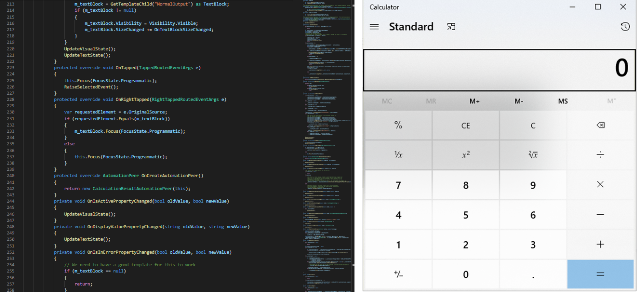
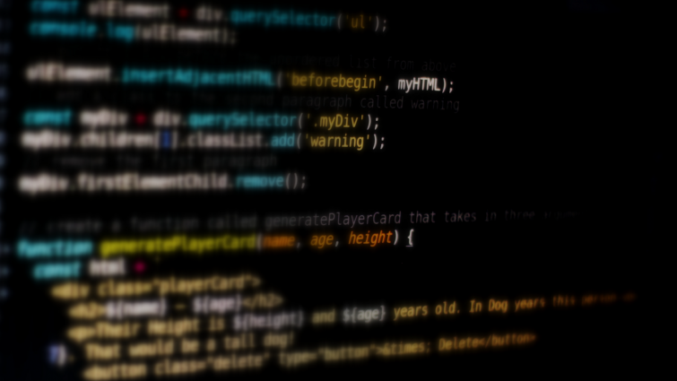

Noticias, opiniones y análisis de la comunidad de seguridad informatica.
Robo del código fuente ¿cuáles pueden ser las consecuencias
Explicamos por qué el código fuente puede ser de gran valor para los ciberdelincuentes y cuáles pueden ser las consecuencias de que caiga en manos indebidas.
Las noticias de ciberataques que involucraron el robo del código fuente son cada vez más frecuentes en la escena de la seguridad de la información. Pero pocas veces se analiza en profundidad cuáles son los riesgos que implica que el código fuente de un software caiga en manos de actores maliciosos. Por eso, en este artículo propongo poner el foco en el posible impacto que puede causar el robo de este tipo específico de información, tanto para las empresas, originalmente titulares de los código fuente filtrado, y para cualquier usuario del software afectado.
¿Qué es el código fuente? Se trata de la estructura interna de un software antes de ser compilada para convertirse en un software en sí mismo. El código fuente es un componente fundamental de un programa informático que está compuesto por palabras o símbolos escritos de forma ordenada. Tiene la particularidad de que puede ser fácilmente leído y comprendido por un ser humano, siendo este el principal riesgo de seguridad vinculado a los códigos fuente.

Imagen 1: Código fuente de la aplicación calculadora de Windows.
Independientemente del lenguaje de programación utilizado para componer el código fuente, algunos puntos suelen ser comunes a todos ellos. Y estos puntos pueden terminar siendo utilizados por personas malintencionadas para realizar acciones delictivas que pueden derivar no solo en el delito en sí, sino también generar un fuerte impacto en la reputación de las empresas
¿Qué puede hacer un cibercriminal con un código fuente?
#Creación de exploits.
El código fuente es el “esqueleto” de un software. Por lo tanto, que ciberdelincuentes tengan acceso a esta información les da la posibilidad de examinar todas sus características internas en busca de puntos vulnerables para el desarrollo de exploits, principalmente gracias a la legibilidad del código, tal como mencionamos anteriormente.
Por ejemplo, un delincuente descubre que un servicio espera recibir un conjunto de caracteres específicos (por ejemplo, en un campo determinado), y si estos caracteres no son los que el programa o software maneja correctamente, se producirá una falla interna. Esta falla abre la posibilidad de que se desarrolle un exploit con la intención aprovechar esta anomalía para realizar una determinada acción que pueda beneficiar al ciberdelincuente.
Las definiciones habituales hablan de un programa o código que se aprovecha de una vulnerabilidad o fallo de seguridad en una aplicación o sistema, de forma que un atacante podría aprovechar ese fallo en su beneficio.
Trasladado a la vida real, sería como si un modelo de cerradura (sistema o aplicación) tuviera un fallo de diseño que permite a un tercero crear llaves que abran esa cerradura (exploit). Con esta llave o exploit un actor malintencionado podría acceder a un sitio o entorno vulnerable y realizar actos delictivos. Por ejemplo, ejecutar malware.
Existe confusión entre los usuarios y cierto mito de que un exploit puede considerarse malware. La realidad es que, tal y como hemos visto en el ejemplo, no es un código malicioso en sí mismo, sino que es la llave para que estos accedan a nuestro sistema y luego realicen otras acciones maliciosas.
Datos y casos sobre el uso de exploits
Uno de los exploits más conocidos es Eternalblue, ya que fue el que se utilizó en los ataques del ransomware WannaCry en 2017 que paralizó al mundo. Este exploit aparentemente fue robado a la Agencia Nacional de Seguridad de los Estados Unidos en 2016 y se filtró en 2017. Aprovechaba una vulnerabilidad en la implementación del protocolo del Bloque de Mensaje de Servidor (SMB, por sus siglas en inglés) de Microsoft.
En 2020 el grupo de ransomware REvil aprovechó un exploit para una vulnerabilidad zero-day en Kaseya VSA, un software utilizado para gestionar remotamente equipos de TI. Mediante una falsa actualización, cibercriminales lograron explotar la vulnreabilidad e infectar con ransomware a más de 1.000 compañías en al menos 17 países.
En 2023 cuatro de los cinco exploits más utilizados en ataques a organizaciones de América Latina corresponden a vulnerabilidades que fueron reportadas entre 2012 y 2017.
En 2023 compañías como Apple y Google lanzaron varias actualizaciones para corregir distintas vulnerabilidades zero-day que estaban siendo aprovechadas activamente por cibercriminales en sus ataques.
En el caso de Apple, la compañía reparó en 2022 al menos ocho vulnerabilidades zero-day, mientras que Google reparó en 2023 al menos nueve vulnerabilidades zero-day en su navegador Google Chrome.
El acceso directo al código hace que este proceso sea mucho más sencillo, ya que permite buscar de forma directa debilidades que, en algunos casos, son ampliamente conocidas por los delincuentes. Si tienen éxito en su búsqueda, los delincuentes pueden llegar a crear los temidos exploits zero-day que le brinden la oportunidad, por ejemplo, de ejecutar comandos de forma remota, pudiendo comprometer a todos los usuarios de la versión vulnerable de ese software. En un caso a principios de 2022, ciberdelincuentes tuvieron acceso al código fuente de distintos productos de Microsoft que son ampliamente utilizados, por lo que el hallazgo de una vulnerabilidad en alguno de estos podría causar serios problemas a cientos de miles de personas.
#Extorsión
La extorsión puede considerarse el principal riesgo de que el código fuente caiga en manos de ciberdelincuentes.. La estructura de esta oración difiere de la estructura de todas las demás líneas presentadas porque es un comentario. En el caso del lenguaje de programación C# (imagen del ejemplo), los caracteres que denotan la estructura del comentario son las dos barras, pero esto varía según el lenguaje, así como el color del texto. La línea a menudo varía según el intérprete/compilador de comandos utilizado para leer el código. Aparte de estas particularidades, los comentarios son extremadamente útiles en la programación, ya que permiten agregar anotaciones en pasajes del código. Estas notas ayudan mucho la lectura del código y no serán interpretadas por el compilador; es decir que no aparecerán en el programa en sí.
Está bien, pero ¿y qué? ¿Por qué los comentarios son útiles para los delincuentes?
Además de hacer que el código creado por otra persona sea más fácil de leer, los comentarios suelen contener información que los delincuentes podrían utilizar. Un ejemplo clásico de esto son las contraseñas, ya que en un pasaje en el que se utiliza una contraseña cifrada puede haber un comentario que incluya la contraseñas en texto legible y el tipo de cifrado utilizado para ocultarla. Esto claramente aumenta exponencialmente el riesgo a una empresa de ser extorsionada por cibercriminales. Lamentablemente, este es un ejemplo basado en hechos reales.

#Ataques de fuerza bruta
Otra característica que puede interesar a los delincuentes además de las contraseñas son los nombres de usuario, que también pueden estar presentes en el código bajo la forma de comentario. Este tipo de información puede aparecer por varias razones en un código, pero una cosa es segura, si tiene nombres de usuario, contraseñas o direcciones de correo electrónico, seguramente serán de gran utilidad para los delincuentes. En el caso de las direcciones de correo electrónico, los delincuentes están seguros de tener una forma válida de contacto con alguien perteneciente a un área interna de la empresa, normalmente de un sector que forma parte de la estructura de desarrollo de ese software o algún otro muy próximo. Esta información puede abrir las puertas para el envío de correos de phishing, por ejemplo.
Por otra parte, la presencia de información como nombres de usuario o contraseñas en un código fuente puede darle al cibercriminal la posibilidad de realizar un ataque de fuerza bruta en algún punto de la estructura. Si además tenemos en cuenta que normalmente la dirección de correo electrónico de una persona es también su nombre de usuario, esta posibilidad puede volverse aún más real.
Si el código contiene las credenciales de acceso para una parte de la estructura de la compañía el problema puede ser un poco más serio. Esta información plantea la posibilidad de que un delincuente pueda obtener acceso a un sistema haciéndose pasar por un usuario o servicio en particular. Una forma de acceso tan fácil en manos de alguien con intenciones maliciosas puede causar daños severos a una estructura.
#Descubrir nuevos objetivos dentro o fuera de la empresa
Generalmente, cuando los datos de autenticación aparecen en el código fuente, estos datos suelen estar asociados al acceso a una determinada ubicación, que puede ser un servicio externo o interno al entorno, y para que tenga éxito también se debe proporcionar una dirección de acceso. El formato de estas direcciones suele oscilar entre direcciones IP y URL y pueden escribirse de forma legible u ofuscada.
Independientemente de cuáles son los datos adicionales que pueden ser vistos en un código, cuando un ciberdelincuente encuentra una URL o una dirección IP, puede inferir que el software en algún momento realizará algún tipo de comunicación con ese destino. Esta comunicación puede ser la recolección o envío de información, consulta de indicadores, validación de respuesta de un determinado servicio o cualquier otra necesidad que pueda tener el software. La cuestión es que existe una relación más estrecha entre el software y este destino. Los delincuentes pueden usar esto de varias maneras, por ejemplo, la dirección encontrada puede ser considerada parte del espectro del ataque y los esfuerzos pueden dirigirse a comprometerla.
Todos los puntos mencionados son críticos. Si el código fuente pertenece a un software que se ha desarrollado para satisfacer las necesidades de una empresa específica, esta información se vuelve aún más relevante.
Vale la pena señalar que las motivaciones que pueden tener los cibercriminales para intentar obtener un código fuente puede variar mucho en cada caso. A principios de 2022, un grupo comprometió el entorno de un reconocido fabricante de tarjetas de video. Este entorno había sido comprometido con un ransomware y, como parte del rescate, los delincuentes exigieron al fabricante la liberación del código fuente de las tarjetas a la comunidad. La mayoría de las veces lo que ocurre es que los delincuentes acceden al código fuente y utilizan esta información para extorsionar a sus víctimas. Por ejemplo, si los delincuentes tienen el código fuente del principal software de una empresa, pueden amenazar con divulgarlo si no se paga el rescate. Si el negocio de la empresa se basa en este software, en caso de filtración las consecuencias pueden ser muy graves, lo que puede hacer que muchas empresas opten por pagar el rescate a los cibercriminales.
Cómo proteger el código fuente
Ahora que hemos aclarado algunos de los puntos más importantes relacionados con el código fuente y los riesgos de su filtración, ¿cómo es posible garantizar su protección?
Empresas
Creemos que los caminos más simples hacia un entorno más seguro son aquellos que se eligen antes de que ocurra un incidente, con una planificación adecuada a las necesidades del entorno.
En lo personal me gusta bastante la postura de protección orientada a los datos, no a un servidor o estación en sí. Teniendo esto en cuenta, un camino interesante es asegurarse de que solo las personas adecuadas tengan acceso a la información confidencial, como los códigos fuente, aplicar una política de privilegios mínimos y revisar los permisos continuamente. Asegurando que el acceso a la ubicación (donde está la información) cuente con todos los recursos tecnológicos y esté debidamente protegido con varias capas de protección como soluciones de protección de endpoint, DLP o doble factor de autenticación.
Siempre que trato con información extremadamente crítica, además de utilizar todas las soluciones de protección que sean posibles para el acceso, almacenamiento y tráfico de información, también me gusta apoyarme en los procesos. Los procesos adecuados ayudan a que las personas responsables del manejo de la información y su entorno lo hagan de manera adecuada y en línea con lo esperado por el negocio. Por lo tanto, recomiendo que los procesos relacionados con la manipulación de la información sean revisados y probados periódicamente para que las personas encargadas de ejercerlos lo hagan de acuerdo con lo esperado. Este conjunto de medidas traerá importantes beneficios para todo el medio ambiente.
Usuarios
La mayoría de las veces no depende de nosotros, los usuarios, proteger el código fuente en sí, pero aun así es posible tomar algunas precauciones si tenemos noticias o problemas relacionados con las filtraciones del código fuente del software que usamos.
El hecho de que los ciberdelincuentes hayan obtenido acceso al código fuente puede significar que han tenido acceso a otras partes del entorno de una compañía, lo cual puede tener consecuencias aún peores.
Con respecto a las contraseñas, es importante utilizar una contraseña diferente para cada servicio. Esto evitará que los delincuentes tengan acceso a su correo electrónico u otros servicios no relacionados solo porque tuvieron acceso a uno de ellos. Un consejo para que no tengas que recordar miles de contraseñas diferentes: utiliza un administrador de contraseñas. Los buenos administradores ofrecen la opción de crear contraseña variable basada en patrones definidos por el usuario, como caracteres especiales, mayúsculas y cuántos caracteres debe tener la contraseña.
Por último, otro elemento que puede estar relacionada con el compromiso del código es el acceso a la lista de usuarios del sistema, ya sea la lista completa o una muestra. El acceso a esta información puede permitir a los delincuentes contactar a los usuarios de la herramienta y enviarles correos de phishing, por ejemplo. Incluso sin estar directamente relacionados con el incidente, siempre podemos tomar medidas que beneficien nuestra seguridad.